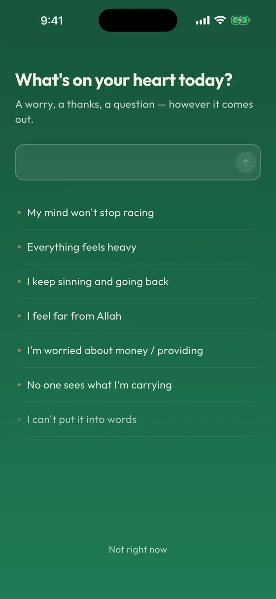
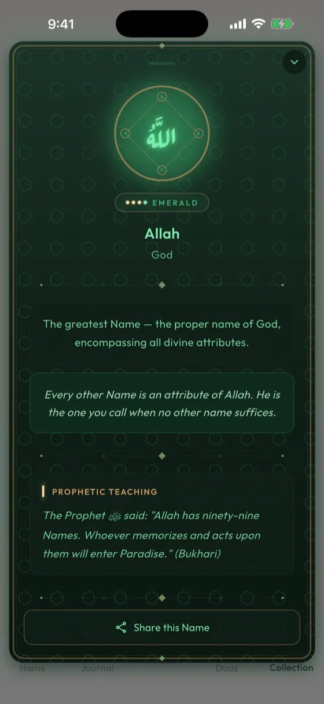
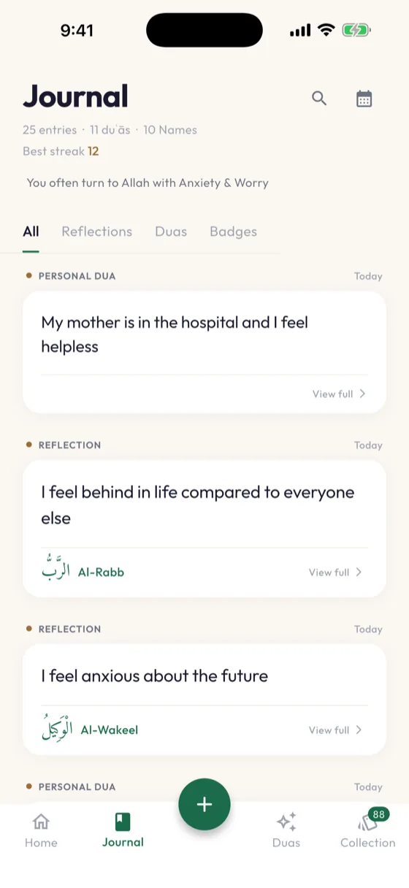

Your daily moment of Islamic reflection
Discover a Name of Allah, receive a personal dua, and deepen your connection — every day.
On Android? Join the waitlist
Discover a Name of Allah, receive a personal dua, and deepen your connection — every day.
On Android? Join the waitlist



Simple, beautiful, and built with intention.
Each day reveals a new Name and its meaning, drawn from the 99 Beautiful Names of Allah.
Receive a dua tailored to your heart's state — in Arabic with translation and transliteration.
A short, guided muhasabah to help you check in with yourself and your Creator every day.